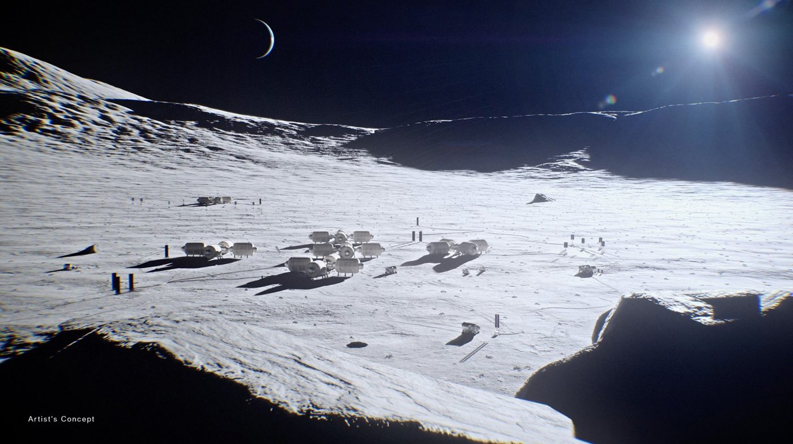
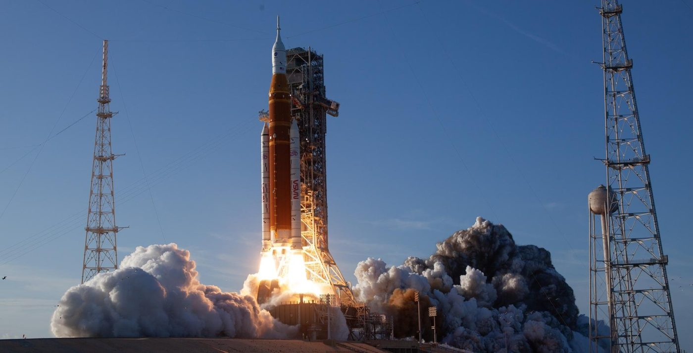
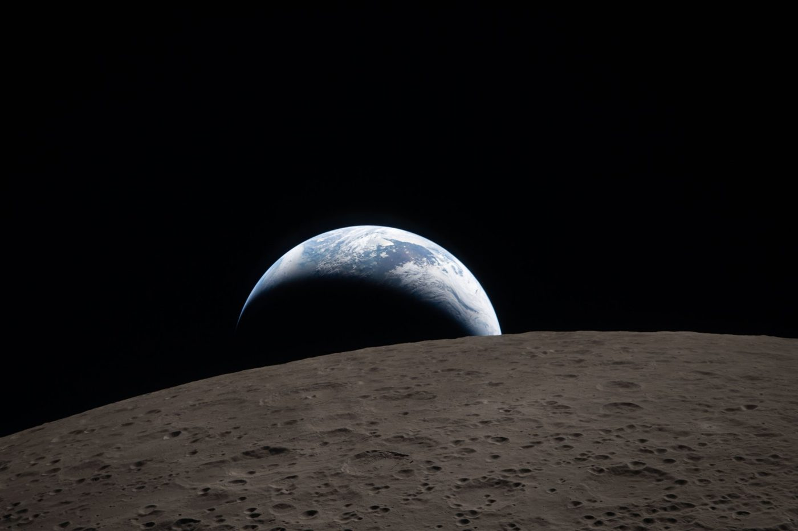
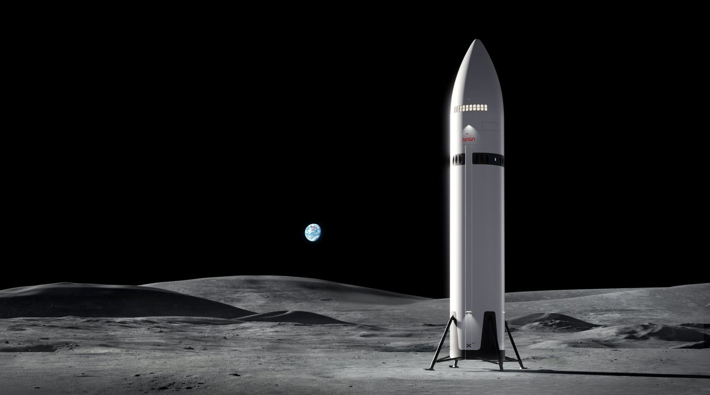
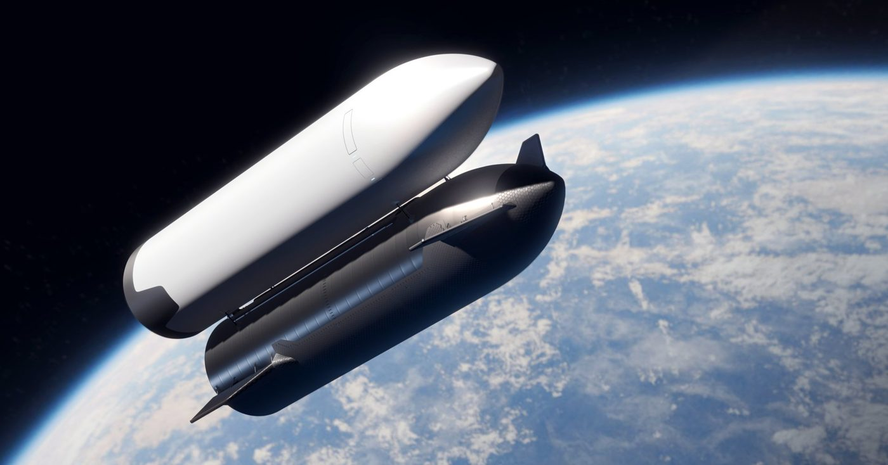
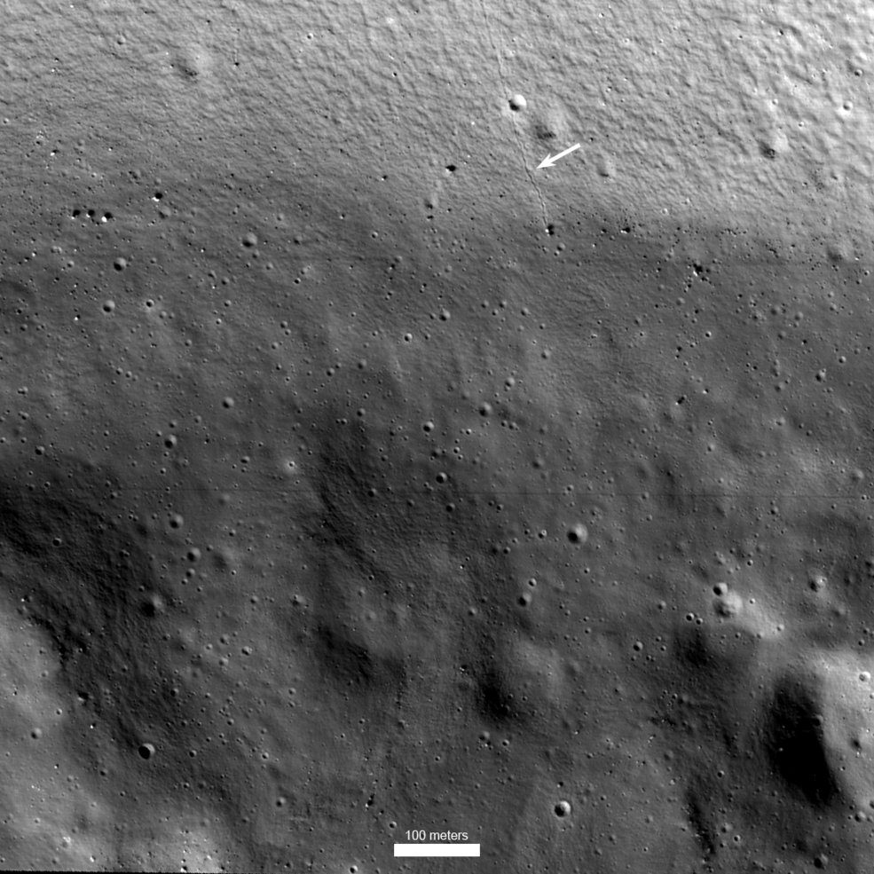

2026년 4월, 네 명의 우주비행사가 1972년 아폴로 17호 이후 처음으로 달을 향해 날아갔습니다. 아르테미스 2호는 달 뒤편을 돌아 무사히 지구로 돌아왔고, NASA는 2028년 달 착륙을 목표로 다음 단계를 준비하고 있습니다.
그런데 지난 10월, 계획이 다시 바뀌었습니다. 다음 임무인 3호는 달이 아니라 지구 궤도에서 착륙선을 시험합니다. 이번 창간호에서는 인류가 왜 다시 달로 가는지, 지금 어디까지 왔는지, 그리고 한국은 무엇을 하고 있는지 정리했습니다.
왜 다시 달인가?
아르테미스의 목표는 아폴로처럼 달에 '다녀오는' 것이 아닙니다. 달 남극에 사람이 머무는 기지를 세우고, 그 경험을 발판 삼아 화성까지 가는 것입니다. 이름도 그리스 신화 속 아폴론의 쌍둥이 누이, 아르테미스에서 따왔습니다.
왜 달에 가는 것일까?
- 머무르기 위해: 아폴로는 며칠짜리 방문이었습니다. NASA는 이번에는 달 남극에 사람이 계속 머무는 '문 베이스(Moon Base)'를 짓겠다고 밝혔습니다. (NASA)
- 화성으로 가는 발판: 지구에서 사흘 거리인 달에서 장기 체류 기술을 먼저 익히고, 이를 첫 유인 화성 탐사의 기반으로 삼는다는 계획입니다. (NASA)
- 과학: 달 남극에는 38억 5천만 년 넘게 거의 변하지 않은 지형과 거대한 남극-에이트켄 분지가 있습니다. 태양계 초기 역사를 읽을 수 있는 단서입니다. (Starlust)
- 경쟁: 냉전 시기, 우주 탐사의 상대가 소련이었다면, 지금은 중국입니다. NASA의 국장 재러드 아이작먼은 그동안 우주탐사의 진행이 더뎌 중국과의 경쟁이 필요 이상으로 치열할것이라 말했습니다. (AP)
달에 가서 무엇을 하나?
핵심은 남극의 얼음입니다. 달 남극에서는 태양이 늘 지평선 가까이 낮게 떠 있어서, 깊은 크레이터 바닥은 수십억 년 동안 햇빛이 한 번도 닿지 않았습니다. 이 '영구음영지역'에 얼음이 갇혀 있을 가능성이 높습니다.
얼음은 녹이면 마실 물이 되고, 분해하면 숨 쉴 산소와 로켓 연료(수소·산소)가 됩니다. 지구에서 모든 물자를 실어 나르지 않아도 되니 기지 운영의 키포인트(Key point)입니다. 반대로 높은 지대는 햇빛이 거의 끊이지 않아 태양광 발전에 유리합니다. NASA는 이런 조건을 갖춘 남극 후보 착륙 지역 13곳을 골라 두었습니다. (CBS News)
11월 7일 NASA가 발표한 문 베이스 계획에는 사람보다 먼저 보낼 장비들이 담겼습니다. (NASA)
- 무인 착륙선: SpaceX, 블루오리진 등 민간 기업 8곳을 선정했습니다. 10년간 최대 100억 달러 규모로 장비와 과학 기기를 달에 배달합니다.
- 원자력 로버 PROMISE: 바퀴 6개짜리 탐사차로, 약 1m 깊이까지 땅을 뚫어 얼음을 분석합니다. 긴 달의 밤과 그늘진 크레이터 안에서도 움직일 수 있습니다. 2028년 말 발사, 18개월 임무가 목표입니다.

지금까지의 여정
아르테미스는 지금까지 무인 시험비행(1호)과 유인 달 선회비행(2호), 두 단계를 마쳤습니다. 둘 다 달에 내리지 않고 주위를 돌아오는 비행이었습니다.
| 아르테미스 1호 | 아르테미스 2호 | |
|---|---|---|
| 기간 | 2022년 11월 16일 ~ 12월 11일 (약 25.5일) | 2026년 4월 1일 ~ 4월 10일 (9일 1시간 32분) |
| 탑승 | 무인 (센서를 단 마네킹) | 우주비행사 4명 |
| 핵심 시험 | 로켓(SLS)과 우주선(오리온), 열차폐막 | 생명유지장치 등 사람이 탄 상태의 모든 시스템 |

2호: 54년 만의 유인 달 비행
2호는 한국시간으로 4월 2일 아침 미국 플로리다에서 발사됐습니다. 사령관 리드 와이즈먼, 조종사 빅터 글로버, 크리스티나 코크(이상 NASA), 제러미 핸슨(캐나다우주국)이 탔습니다. 글로버는 달을 돈 첫 유색인종, 코크는 첫 여성, 핸슨은 첫 비미국인입니다. (Al Jazeera)
- 인류 최장 거리: 4월 6일, 1970년 아폴로 13호가 세운 약 40만 km 기록을 넘어 약 40만 6천 km까지 나갔습니다. (Al Jazeera)
- 지구가 지는 사진: 승무원들은 달 너머로 지구가 지는 장면을 찍었습니다. 1968년 아폴로 8호의 '지구돋이' 사진을 떠올리게 한 장면입니다. (AP/WTTW)
- 귀환: 시속 약 3만 9,700km로 대기권에 진입해 4월 10일 미국 샌디에이고 앞바다에 내려앉았고, 네 명 모두 무사했습니다. (AP/WTTW, Fox Weather)

앞으로의 계획: 왜 바로 착륙하지 않을까
원래 계획에서는 3호가 달에 착륙하는 임무였습니다. 하지만 NASA는 2026년 2월, 착륙선 개발이 늦어지자 착륙 전에 지구 궤도에서 한 번 더 시험하기로 했습니다. 그래서 첫 착륙은 4호(2028년)로 넘어갔습니다. (CBS News, Discover)
아르테미스 3호 (2027년 여름 목표)
- 우주비행사 4명(NASA 3명, 이탈리아 1명)이 오리온을 타고 지구 궤도에 약 2주간 머뭅니다.
- 로켓 세 대를 연달아 쏘아 올립니다. 오리온은 고도 약 435km에서 블루오리진의 착륙선과 먼저 도킹하고, 이어 조금 더 낮은 궤도에서 SpaceX의 스타십과 도킹합니다.
아르테미스 4호 (2028년 목표): 첫 착륙
아폴로 이후 처음으로 사람이 달 남극에 내립니다. 착륙선을 SpaceX와 블루오리진 중 어느 쪽으로 할지는 3호 시험 결과를 본 뒤 최대한 늦게 정하기로 했습니다. (AP) NASA는 3·4·5호를 모두 2028년 말 이전에 쏘겠다는 목표를 세웠습니다. (Spaceflight Now)
SpaceX는 무엇을 했나
SpaceX는 아르테미스에서 우주비행사를 달 궤도에서 표면까지 내려주는 '착륙선'을 맡았습니다. 오리온이 달까지 가는 택시라면, 스타십은 마지막 구간을 책임지는 엘리베이터인 셈입니다.
- 2021년 4월, 착륙선 계약: NASA는 블루오리진·다이네틱스를 제치고 SpaceX의 스타십을 첫 유인 착륙선으로 골랐습니다. 계약 규모는 약 29억 달러로, 경쟁사보다 훨씬 저렴한 입찰가가 결정적이었습니다. 사람을 태우기 전에 무인으로 달 착륙을 먼저 증명하는 조건이 붙었습니다. (National Geographic)
- 경쟁자의 등장: 이후 NASA는 두 번째 착륙선으로 2023년 블루오리진의 '블루 문'을 추가했습니다. 지금은 두 회사가 4호 착륙 자리를 두고 경쟁하는 구도입니다. (Wikipedia)
- 폭발과 재도전의 시험비행: 스타십 전체 발사체는 2023년 4월 첫 비행에서 몇 분 만에 실패했습니다. 이후 2024년 10월에는 발사탑의 '젓가락 팔'로 돌아오는 1단 부스터를 붙잡는 데 성공했고, 2026년 9월 14번째 비행에서 처음으로 궤도에 올랐습니다. (Space.com)

가장 큰 숙제: 우주에서 기름 넣기
스타십이 달까지 가려면 지구 궤도에서 연료를 가득 채워야 합니다. 연료 운반선(탱커)을 여러 번 쏘아 올려 궤도 위 '우주 주유소'를 채우고, 착륙선이 거기서 급유받는 방식입니다. (Wikipedia)

SpaceX는 2024년 한 우주선 안의 두 탱크 사이에서 연료를 옮겨본 적은 있지만, 우주선끼리 연료를 주고받는 시험은 아직 하지 못했습니다. 영하 180도 안팎의 극저온 연료를 무중력 상태에서 옮겨야 하는 어려운 기술입니다. (Space.com) 10월 국제우주대회에서 공개된 NASA 일정표는 이 시험을 2027년 초로 잡았습니다. (Wikipedia)
착륙선 말고도 역할은 늘고 있습니다. SpaceX는 문 베이스 화물 배송 기업 8곳에 포함됐고, 2028년에는 스타십으로 달 주변에 통신위성을 올리는 시연도 맡았습니다. (NASA)
한국은 무엇을 했나
한국은 2021년 아르테미스 협정에 서명한 뒤, 달 궤도선 다누리로 아르테미스에 필요한 자료를 제공하고 2호에는 큐브위성까지 실어 보냈습니다.
아르테미스 협정 (2021년 5월)
아르테미스 협정은 달·화성 탐사를 평화적 목적으로, 투명하게 하고, 위급할 때 서로 돕자는 원칙을 담은 국제 약속입니다. 한국은 2021년 5월 10번째 서명국이 됐고, 지금은 수십 개국이 참여하고 있습니다. (뉴스핌, 정책브리핑)
다누리: 아르테미스의 눈 (2022년~)
한국 첫 달 탐사선 다누리는 2022년 8월 5일 SpaceX의 팰컨9 로켓에 실려 발사됐습니다. 다누리에는 NASA가 만든 '섀도캠'이 실려 있는데, 햇빛이 들지 않는 달 남극 크레이터 안을 찍는 카메라입니다. 아르테미스 착륙 후보지인 섀클턴 크레이터 내부도 이 카메라로 촬영했습니다. (아주경제)

- 세계에서 네 번째로 달 표면 전체를 찍은 고해상도 지도를 완성했습니다. (뉴스스페이스)
- 원래 1년짜리 임무였지만 두 번 연장돼 2027년 말까지 관측합니다. 2025년 9월부터는 연료를 거의 쓰지 않고 궤도를 유지하는 '동결궤도'에서 돌고 있습니다. (경향신문)
- 임무가 끝나면 고도를 착륙 수준까지 낮춰 착륙 기술을 시험한 뒤, 2028년 3월 달 표면에 충돌시킬 계획입니다. (뉴시스)
K-라드큐브: 아르테미스 2호에 탄 한국 위성 (2026년 4월)
한국천문연구원과 나라스페이스가 만든 12U 크기 큐브위성 K-라드큐브가 아르테미스 2호 로켓에 함께 실렸습니다. 지구를 둘러싼 강한 방사선 띠(밴앨런대)를 지나며 방사선이 우주비행사와 반도체에 미치는 영향을 재는 임무였고, 삼성전자·SK하이닉스 반도체도 실려 있었습니다. (뉴시스, 쿠키뉴스)
위성은 발사 당일 고도 약 4만 km에서 무사히 분리됐습니다. 하지만 일부 신호만 잡혔을 뿐 관측 데이터를 주고받는 정상 교신에는 실패했고, 이후 생존 가능성이 희박하다는 발표가 나왔습니다. (뉴시스, 뉴시스) 결과는 아쉽지만, NASA의 까다로운 유인 비행 안전 기준을 통과해 국산 위성을 유인 달 탐사선에 실었다는 경험은 남았습니다.
한국의 앞으로 계획
한국의 목표는 2032년 우리 발사체로 우리 착륙선을 달에 내리는 것이고, 그 전에 2030년 민간 주도의 소형 착륙선으로 먼저 도전합니다. 장기적으로는 2045년 '달 경제기지' 구축을 내다보고 있습니다. (뉴시스)
- 2029년, 달 통신 궤도선: 누리호에 궤도수송선을 붙여 달 궤도에 통신위성을 보냅니다.
- 2030년, 민간 소형 착륙선: 약 700kg급 착륙선을 민간기업과 함께 보내 한국의 첫 달 착륙에 도전합니다. 순수 과학보다 '달 경제' 선점이라는 산업적 목적이 크다고 우주항공청은 설명했습니다.
- 2031년, 우주과학 탐사선 발사가 이어집니다.
2032년, 착륙선 두 대
누리호의 뒤를 잇는 차세대발사체(메탄 엔진, 재사용을 염두에 둔 설계)로 2032년 상반기에 '연착륙 검증선', 하반기에 '달 착륙선'을 보냅니다. 검증선은 부드럽게 내려앉는 기술과 달 표면 환경을, 착륙선은 정밀 착륙과 자원 탐사를 맡습니다. 우주항공청은 10월 30일 후보지 분석 결과(검증선 9곳, 착륙선 20곳)를 공개했고 올해 안에 착륙지를 정할 예정입니다. (연합뉴스, 경향신문)
NASA의 '문 베이스'에 한국이 낄 자리
7월 서울을 찾은 NASA 문 베이스 총괄 카를로스 가르시아 갈란은 한국을 달 기지의 주요 기여국으로 꼽았습니다. 양측은 착륙선, 통신, 월면 이동체, 과학 탐사, 시료 채취 장비, 센서 분야에서 한국의 참여를 논의하고 있습니다. NASA는 2032년부터 우주비행사가 장기간 머무는 준영구 기지를 운영하는 것을 목표로 합니다. (아시아경제)
한국, 달로 가는 길을 열다
달에 가려면 우리 로켓, 그 일을 이끌 기관, 달에서 쓸 기술이 필요합니다. 한국은 이 세 가지를 동시에 준비하고 있습니다.
우리 로켓 누리호, 그리고 우주항공청
누리호는 2021년 10월 첫 발사 이후 다섯 번 중 네 번 성공했습니다. 지난 10월 7일 5차 발사에서는 초소형 군집위성 5기와 큐브위성 9기를 궤도에 올렸습니다. 주 탑재 위성 5기를 한 번에 올린 건 처음입니다. (코리아중앙데일리)
- 민간으로 넘어가는 발사: 이번에는 누리호를 만드는 한화에어로스페이스가 발사 관제 콘솔 22개 중 20개를 처음으로 직접 운용했습니다. 2029년부터는 발사를 민간이 주도합니다.
- 달로 이어지는 쓰임새: 6차 발사는 2027년 하반기로 잡혀 있고, 2032년까지 해마다 한 번 이상 쏠 계획입니다. 앞서 소개한 2029년 달 통신 궤도선도 누리호에 실려 갑니다.
이 모든 일은 2024년 5월 27일 경남 사천에 문을 연 우주항공청이 이끕니다. 흔히 '한국판 NASA'로 불리며, 우주 정책과 연구개발, 산업 육성, 국제협력을 맡습니다. (뉴시스)
한국 장비가 먼저 달 표면에 내린다
한국 착륙선보다 먼저 달 표면에 닿을 한국 장비가 있습니다. 한국천문연구원이 만든 과학 장비 4종이 NASA의 민간 달 착륙선 사업(CLPS)을 통해 달 앞면 저위도의 '라이너 감마' 지역에 내릴 예정입니다. 아르테미스 협정에 서명한 뒤 처음 추진된 한미 협력 사업입니다. (헬로디디, 머니투데이)
| 장비 | 하는 일 |
|---|---|
| LUSEM (달 우주환경 모니터) | 우주에서 쏟아지는 고에너지 입자와 달 표면에서 튕겨 나오는 입자를 함께 측정 |
| LSMAG (달 표면 자기장 측정기) | 달 표면의 자기장 측정 |
| GrainCams (달 표토 3차원 카메라) | 달 표면 흙을 3차원으로 촬영 |
| LVRAD (달 표면 우주방사선 측정기) | 달 표면에 닿는 우주방사선 측정 |
대표 장비인 LUSEM은 무게 약 10kg으로, 경희대와 쎄트렉아이가 개발에 참여했습니다. 장비들은 미국 인튜이티브 머신스의 착륙선 '노바-C'(IM-3 임무)에 실립니다. 처음에는 2024년 말 착륙이 목표였지만 일정이 계속 밀려, 천문연구원은 2026년, 최근 자료는 2027년 초로 잡고 있습니다. (천문연구원, Wikipedia)
달 기지에 쓰일 한국 기술
국내 연구기관들은 문 베이스 같은 달 기지에 바로 쓰일 기술을 만들고 있습니다. (YTN)
- 달 흙으로 벽돌 만들기: 한국건설기술연구원은 달 흙(월면토)과 성분이 같은 재료를 마이크로파로 구워 굳히는 방식으로 20cm 벽돌과 테트라포드 모양 블록을 만들었습니다.
- 착륙장과 도로 포장: 달 표면에 마이크로파를 쏘아 땅을 굳히는 장비도 개발 중입니다. 지금은 지름 15cm, 깊이 1cm 수준이고, 깊이 10cm 이상을 넓게 포장하는 것이 목표입니다.
- 얼음 시추: 달 남극의 얼음을 3m 깊이까지 뚫는 장비를 연구하고 있습니다.
- 전력: 한국원자력연구원은 2019년부터 우주용 초소형 원자로를 개발하고 있습니다.
- 지도: 천문연구원은 2032년 착륙선에 필요한 달 편광 지도를, 한국지질자원연구원은 자원 탐사용 원소 지도를 만들고 있습니다.
다만 아직은 미국·중국에 비하면 초기 단계라 긴 안목의 인력 투자가 필요하다는 지적도 나옵니다. (YTN)
아시아 달 착륙 경쟁, 한국은 어디째일까
아시아에서는 중국·인도·일본이 이미 달에 착륙했습니다. 한국은 달 궤도선까지 성공했고, 착륙은 2030년이 첫 도전입니다.
| 나라 | 첫 달 착륙 | 대표 기록 |
|---|---|---|
| 중국 | 2013년 12월 (창어 3호) | 2019년 달 뒷면 최초 착륙(창어 4호), 2024년 달 뒷면 시료 최초 채취(창어 6호) |
| 인도 | 2023년 8월 (찬드라얀 3호) | 달 남극 근처(남위 약 70도)에 처음 착륙, 세계 네 번째 착륙국 |
| 일본 | 2024년 1월 (SLIM) | 목표 지점 100m 안쪽에 내리는 정밀 착륙 시도, 세계 다섯 번째 착륙국 |
| 한국 | 아직 없음 (2030년 첫 도전) | 2022년 다누리, 달 궤도 진입과 달 전체 지도 완성 |
가장 앞선 중국은 2030년까지 우주비행사 두 명을 달에 내리고, 2031년부터 러시아 등과 함께 달 남극에 국제 연구기지를 짓겠다고 밝혔습니다. (Wikipedia) 미국과 중국이 같은 남극을 두고 경쟁하는 사이, 한국은 아르테미스 쪽에 서서 자기 착륙선을 준비하고 있습니다. 2030년 도전에 성공하면, 지금 기준으로 아시아에서 네 번째로 달에 착륙한 나라가 됩니다.
과거 우리는 남의 손에 빌린 로켓과 외국에 의존해 우주를 바라보았다. 그러나 이제 대한민국은 더 이상 다른 나라에 의지하지 않는다. 이제 대한민국은 인류가 달에 또 다시 발자국을 새기는 대장정의 한복판을 당당히 주도하고 있다. 지구의 밤하늘을 올려다보며 꿈을 꾸던 나라는 이제, 스스로 달을 향한 궤도를 그려나가는 주역이 되었다.
한눈에 보는 연표
점선 위는 이미 일어난 일, 아래는 목표입니다. 목표 연도는 그동안 여러 번 미뤄졌으니 앞으로도 바뀔 수 있습니다.
출처
NASA·아르테미스
- NASA – Artemis Acceleration 브리핑 (2026.10.23)
- NASA – Moon Base 수송·기술·과학 계약 발표 (2026.11.7)
- AP – NASA, 달 기지와 2년 내 착륙 추진 (2026.10.23)
- AP – 아르테미스 2호 귀환 (2026.4.10)
- Al Jazeera – 아르테미스 2호, 아폴로 13호 거리 기록 경신 (2026.4.6)
- Fox Weather – 아르테미스 2호 착수
- CBS News – 아르테미스 계획 개편 (2026.2)
- Discover – 3·4호 임무 변경
- Spaceflight Now – 아르테미스 개편
- CBS News – 달 남극 착륙 후보지
- Starlust – 달 남극이 중요한 이유
SpaceX
- National Geographic – SpaceX 착륙선 선정 (2021.4)
- Space.com – 스타십 10년, 궤도 급유 과제 (2026.10.14)
- Wikipedia – Starship HLS
한국
- 뉴스핌 – 아르테미스 약정 10번째 서명 (2021.5)
- 정책브리핑 – KASA-NASA 연구협약
- 아주경제 – 다누리 섀도캠, 섀클턴 크레이터 촬영
- 뉴스스페이스 – 다누리 3주년 성과
- 경향신문 – 다누리 동결궤도 진입 (2025.9)
- 뉴시스 – 다누리 임무 2027년까지 연장
- 뉴시스 – K-라드큐브 임무 소개
- 쿠키뉴스 – K-라드큐브 탑재체
- 뉴시스 – K-라드큐브 교신 결과 (2026.4.3)
- 뉴시스 – K-라드큐브 신호 감지 불발 (2026.4.4)
- 뉴시스 – 한국 달 탐사 로드맵
- 뉴시스 – 2030년 소형 달 착륙선 (2026.7.3)
- 연합뉴스 – 2032년 착륙 후보지 공개 (2026.10.30)
- 경향신문 – 차세대발사체 재사용 개발 확정
- 아시아경제 – NASA, 한국을 달 기지 주요 협력국으로 (2026.7.29)
- 코리아중앙데일리 – 누리호 5차 발사 (2026.10.7)
- 뉴시스 – 우주항공청 출범 (2024.5.27)
- 헬로디디 – NASA가 선택한 한국 달 모니터 LUSEM
- 머니투데이 – NASA 민간 달 착륙선에 실리는 한국 과학장비 4종 (2023.9)
- 한국천문연구원 – LUSEM
- Wikipedia – Commercial Lunar Payload Services
- YTN – 달 기지 건설 기술 개발 현황 (2026.2.18)